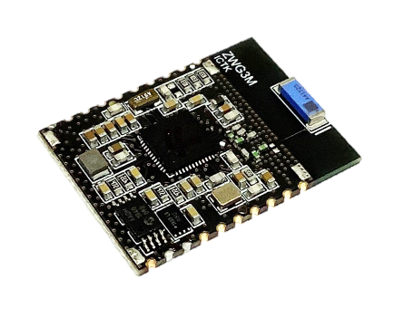

The ZWG3M is a Wi-Fi module consisting of the MT7686 Wi-Fi chip and G3 security chip. This module
includes 2.4GHz chip antenna, Clock sources, and other RF components.
Features
Wi-Fi
IEEE 802.11 b/g/n (2.4GHz, 1x1)
Supports 20MHz, 40MHz channels
Wi-Fi security WEP, WPA2 and WPS
Integrated 2.4GHz PA/LNA and RF switch
Platform
192MHz ARM Cortex-M4 with FPU
Up to 384KB SRAM, with zero-wait state, max frequency 96MHz
Up to 32KB L1 cache, with high hit rate, zero-wait state, maximum frequency at 192MHz
Embedded 32Mbits flash, with less than 0.1uA (typical) and 80MHz maximum frequency Deep power-down
current
Embedded 32Mbits pseudo SRAM with half sleep mode current: 10uA (PASR 1/8 at 25'C, 1x Refresh) and
96MHz maximum frequency
Module
Integrated 2.4GHz Antenna
Interfaces: UART, I2C, PWM, ADC, GPIO
26MHz crystal oscillator / 32KHz crystal oscillator for RTC
Size: 27 mm x 20 mm x 2.4 mm, 20-Pin
Operating temperature range : -30 ~ 85'C
Integrated PUF based security chip for secure authentication